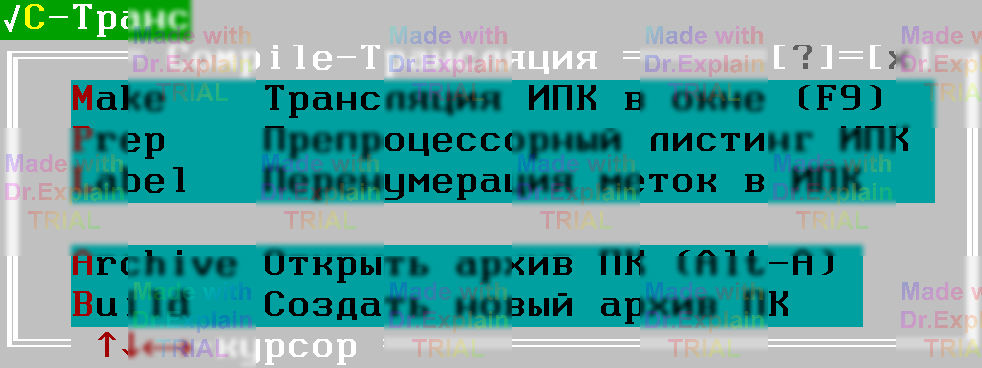

3.2 Меню Compile — Трансляция
Все команды, связанные с трансляцией исходных программ контроля (ИПК) и работой с архивом ПК, собраны в меню Alt + C. Его внешний вид показан на рисунке:

Пункты «Открыть архив ПК» и «Создать новый архив ПК» описаны подробно в разделе [6].